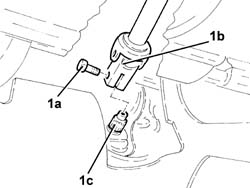
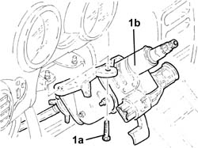
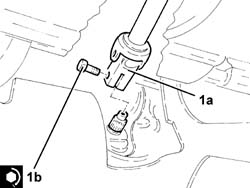

4110A30 SUPPORT WITH STEERING CONTROL SHAFTS - R+R - INCLUDES R+R STEERING WHEEL
- Path
- Procedures > 41 STEERING UNIT > 4110 STEERING CONTROL AND LINKAGE > 4110A STEERING CONTROL > 4110A30 SUPPORT WITH STEERING CONTROL SHAFTS - R+R - INCLUDES R+R STEERING WHEEL
- Kind
- repair procedure (removal / refitting; the operation number is the code)
- Applies to
- all engines; all production periods
- Interactive page
- https://sloeber94.github.io/elrnDB-aGt/en/#/125001399
Applies to: all engines; all production periods
 Removing
Removing
 Refitting
RefittingProceed with removal
Op. 5580C18 AIR BAG MODULE - R+R
Proceed with removal
Proceed with removal
Op. 4110A11 STEERING WHEEL - R+R FOR REPLACEMENT OR CHECK FOR VERSIONS WITH AIR BAG
Proceed with removal
Proceed with removal
Op. 7040A37 FUSE BOX COVER - R R
1. Undo the bolt (1a) and disconnect the steering column (1b) from the power assisted steering box pinion (1c).
Op. 7040A26 STEERING COLUMN TRIM - R+R
Op. 5550A12 COMPLETE STALK UNIT - R+R FOR VERSIONS WITH AIR BAG

Applies to: all engines; all production periods
1. Undo the bolts (1a) and remove the mounting with steering shafts (1b).

Applies to: all engines; all production periods
Refitting
RemovingPlace the support with the steering control shafts back in its housing and secure it using the bolts.
1. Connect the steering column (1a) to the steering box pinion and tighten the new bolt (1b) to the specified torque.
 | Fastening | Component | Ø | Value (daNm) |
|---|---|---|---|---|
1b | Bolt | STEERING SHAFTS | M8 | (Power assisted steering box pinion side) 2.3 ÷ 2.8 |

Applies to: all engines; all production periods
Proceed with refitting
Op. 5550A12 COMPLETE STALK UNIT - R+R FOR VERSIONS WITH AIR BAG.
Proceed with refitting
Op. 7040A26 STEERING COLUMN TRIM - R+R.
Proceed with refitting
Op. 7040A37 FUSE BOX COVER - R R.
Proceed with refitting
Op. 4110A11 STEERING WHEEL - R+R FOR REPLACEMENT OR CHECK FOR VERSIONS WITH AIR BAG.
Proceed with refitting